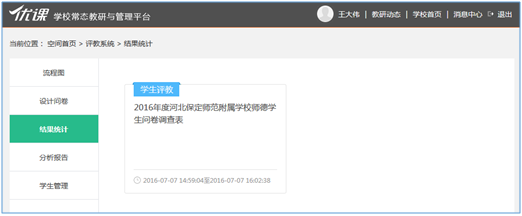
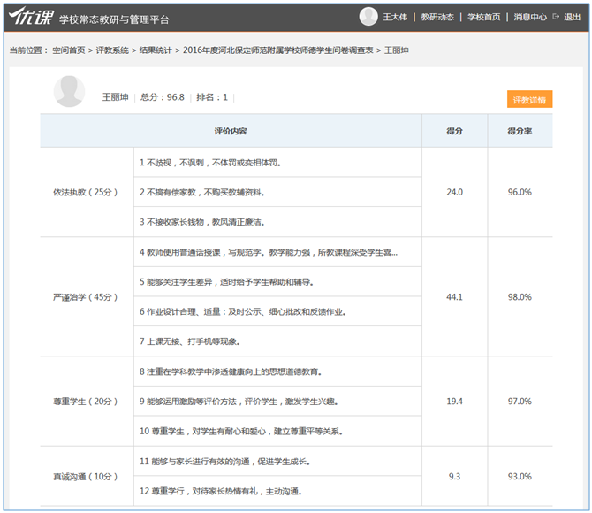

3.4.5 结果统计
用户可以在“结果统计”列表中查看已结束评教问卷的评教结果（如图3.4.5-1）。点击问卷后，跳转至相应问卷结果统计页面（如图3.4.5-2）。
在结果统计页面，用户可以查看到“问卷结果分布率图表”和“问卷结果一览表”。
问卷结果分布率图表中，系统自动按照100（含100）-95（含95）、95-90（含90）、90-85（含85）、85-80（含80）、80-75（含75）、75-70（含70）、70-65（含65）、65-60（含60）、60以下（不含60）分数段进行统计评教结果的人数及分布率。
问卷结果一览表中，系统按照评教结果的名次显示各教师的评教结果，点击“姓名”，可以查看相应教师各指标的得分及得分率（如图3.4.5-3）。点击图3.3-2中右上角的“评教详情”按钮，可以查看各学生或家长具体的评教情况（如图3.4.5-4），通过右上角的搜索条件，可切换查看相应班级相应学科的评教情况。
